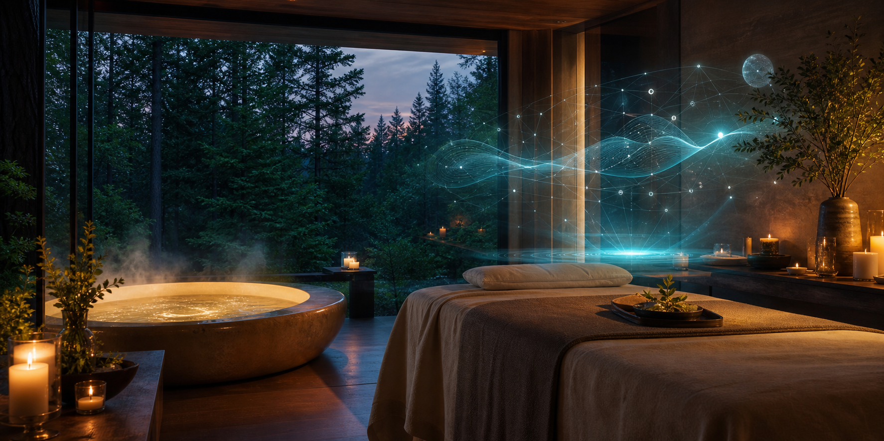

Service
AI Therapy
A guided reflection ritual for softening mental noise, naming what is ready to move, and letting a calm AI-assisted mirror support the conversation without taking over the room.

Guided Reflection Ritual
This session combines the slower pace of a private spa ritual with a focused conversational process. The AI layer is used as a subtle reflective instrument: organizing themes, offering prompts, and helping you notice patterns while the atmosphere stays embodied, warm, and human-led.